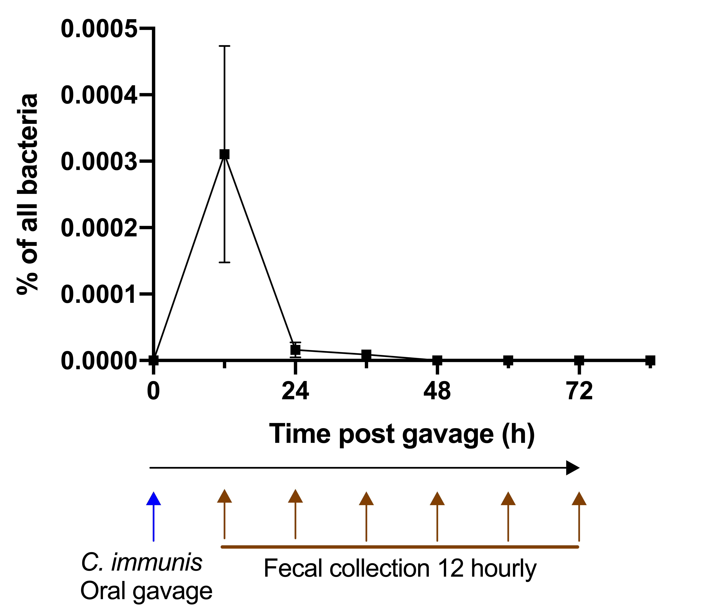
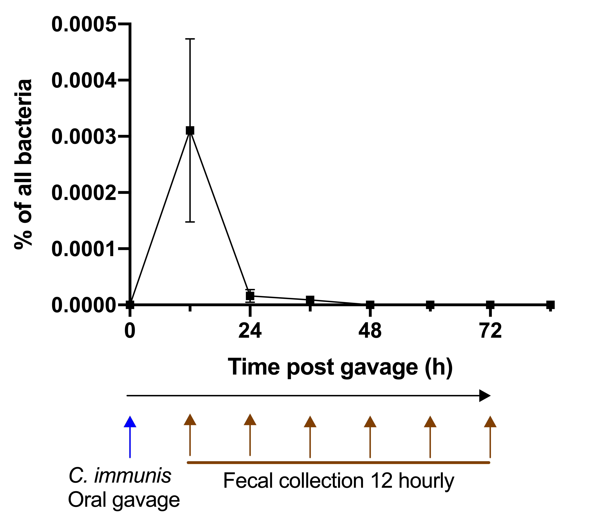

Therapeutic Potential:
Oral administration of Clostridium immunis to mice ameliorates colitis and autoimmune encephalitis severity
Localization and Colonization: Clostridium immunis localizes to the mouse cecum and proximal colon and displays short term kinetics upon single gavage
Immunomodulatory Effects: Clostridium immunis modulates the intestinal type 3 innate lymphoid cell (ILC3) population